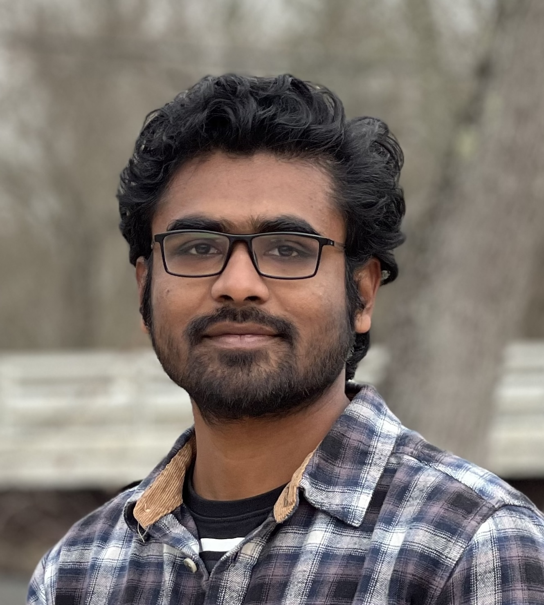

Topu Saha
Expertise: sensor instrumentation and performance evaluation · hardware and software integration for data acquisition · optical signal analysis and feature extraction · machine-learning classification
What the sensor sees
Two sensor layouts: (i) sends a laser beam out and collects the light that insects scatter back, (ii) measures how much an insect blocks the light between an emitter and a receiver. Either way, an insect crossing the laser beam changes the signal.
What I bring
Hands-on optics, sensing systems that survive outdoors, and the analysis that turns raw sensor data into physically meaningful results.
From optical bench to field data
I design and align the optics, build prototypes in the laboratory, integrate the optics, electronics and software, perform noise budgets, and keep sensors running through long field campaigns.
Education
Experience
Five years in an applied optics lab, from bench alignment to unattended field systems.
Graduate Research Assistant
Sep 2021 – presentApplied Optics Lab, NJIT · PI: Dr. Benjamin Thomas
Funded by NIH/NIAID and NJIT Center for Photonics Innovation
- Designed and built a fully autonomous, solar-powered optical sensor with Raspberry Pi data acquisition for ground-based remote sensing.
- Extracted FFT wingbeat frequency, extinction cross-section and cepstral features from optical signals; analyzed long-term data on abundance, biomass and circadian patterns under changing weather.
- Derived empirical corrections for temperature-dependent wingbeat frequency and orientation-dependent cross-section, improving classification.
- Built a THz-TDS polarimetry pipeline to map retardance and birefringence of anisotropic materials.
- Mentored PhD, master's and undergraduate researchers.
Graduate Teaching Assistant
Sep 2021 – presentDepartment of Physics, NJIT
- Instructor for undergraduate physics labs; mentored students on experimental techniques and data analysis.
Courses conducted:
Collaborations
- Wadsworth Center, State Department of Health, NY · ongoing
- Hudson Regional Health Commission, NJ · 2021 – 2023
Selected projects
Skills
Publications
Scientific Reports, Applied Physics B: Lasers and Optics, Insects. Full list on Google Scholar.
Conference & Presentations
Professional & Voluntary Activities
Let's talk
Open to work, starting February 2027.